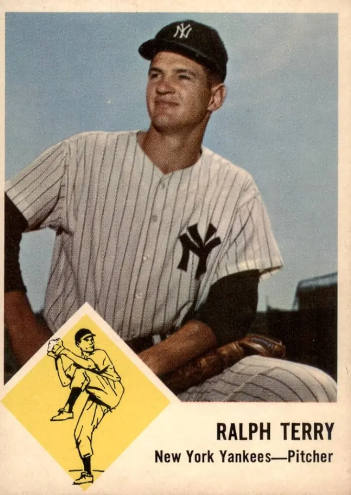

Ralph Terry
Career Highlights & Facts
(Facts are AI-generated and may require verification)
- Earned the most valuable player honor in a championship series after securing 2 wins and a 1.80 ERA.
- Delivered 12 high-pressure pitches in the bottom of the 9th inning of a game 7 to secure a championship victory.
- Successfully qualified for professional golf events through tournament play rather than by invitation.
Would you like to find out more about Ralph Terry?
Tall, trim Oklahoma native Ralph Terry won 107 major-league games over 11-plus seasons, from 1956 into 1967. His most stellar and productive campaign was 1962, when he led the American League in wins, with 23, and compiled a 4.0 WAR for pitchers. Yet, he is most notably recalled for being on the mound in crucial, game-changing circumstances during two World Series—one nightmarishly surreal, the other admirably heroic.
Terry made two pitches to
Bill Mazeroski
in the bottom of the ninth of
Game Seven in the 1960 World Series
. Maz hit number two over the wall at
Forbes Field
in Pittsburgh to give the Pirates a 10-9 win over the New York Yankees, for the crown. The loss was devastating to Terry and to the Yankees.
However, they returned to the Series in each of the next four years. In 1962 against the San Francisco Giants, Terry started and finished Game Seven at Candlestick Park. He clung to a 1-0 lead going into the bottom of the ninth. The Giants were threatening with
Willie Mays
on second and
Matty Alou
on third, but two out, when left-handed slugger
Willie McCovey
stepped in. Terry fired two pitches to McCovey. The second was lasered into the glove of second baseman
Bobby Richardson
for the final out.
Twelve of Terry’s tosses in that ninth inning in ’62 were codified in
“Golden Pitches—The Ultimate Last-at-bat, Game Seven Scenario”
(SABR, 2016). By author Wade Kapszukiewicz’s definition, “a Golden Pitch can only be thrown in Game Seven of the World Series, and only in the bottom of the ninth inning when the road team has the lead … (i.e.,) in no other situation could either team win the World Series on a given pitch.” Only six other hurlers in World Series history were confronted, as was Terry, with the either-or outcome riding on a single delivery. Terry’s dozen is the highest number of Golden Pitches thrown by any of these seven. Thus, Terry not only got redemption for the ’60 Series loss in the ’62 win, but he did so under mounting pressure with each subsequent pitch before conclusively retiring McCovey on Golden Pitch number 12—a Herculean task.
Ralph Willard Terry was born on January 9, 1936, in Big Cabin, Oklahoma to Frank William and Laleta (Adams) Terry. His older brother John Charles, aka Jake or J C, was born in 1933. Frank and Laleta were teenagers when they married in 1932. In 1940, Frank worked as an attendant at Eastern Oklahoma Hospital, later serving in the US Navy during WWII.
Terry attended Council Grove, a rural Oklahoma school, through grade eight. His teacher, Mrs. Edmonds, advanced him directly from second to fourth grade.
He graduated as salutatorian in his senior class of 48 from Chelsea (Oklahoma) High School in 1953.
He was a three-sport star. On the gridiron, he lined up at tight end. In basketball, he was a forward.
In ninth grade, Terry was a catcher, first in American Legion, then high school baseball. But he threw harder than the pitchers, so, his high school coach gave him the start in the season finale. He won, firing a one-hitter, fanning 21. At the plate, the righty batter, also collected seven RBIs—thus, he became a full-time pitcher and a part-time catcher.
In 1952, prior to his senior year, Terry pitched for the Baxter Springs (Kansas) Whiz-Kids, in the Ban Johnson League— a Kansas City based summer league for college players.
In 1953, after graduation, Terry played semipro baseball in Minden, Louisiana. He then signed with the Ban Johnson League Independence Indians.
Terry rejected a scholarship to play football and baseball at Oklahoma A&M (now Oklahoma State University) because he’d decided instead to pursue professional baseball.
In the offseasons between 1953 and 1956, however, he enrolled at Northeastern Oklahoma A&M Junior College. There he played basketball, averaging 22 points per game as a forward (athletic eligibility then was not an issue since he was playing a sport other than baseball.)
He later attended Southwest Missouri State University (now Missouri State University), and the University of Kansas City (now the University of Missouri-Kansas City), earning approximately 140 college credits, but no degree.
On October 31, 1953, Pirates GM
Branch Rickey
gave Terry a tryout in Pittsburgh. In front of the home dugout, Rickey marked off 60 feet, 6 inches and placed a $100 bill on the ground. He told young Terry that if he could hit it squarely, then it was his to keep. Terry narrowly missed it on the first try, then asked for a second, which was granted. Terry proceeded to hit the bill, earning the C-note.
In his scouting report, Rickey wrote, “The greatest reason for saying that this boy has a chance to go all the way is, first, his size [6-foot-3, 195 pounds as a major-league pitcher], body control, regularity in delivery, fast ball control and above all his desire.” Yet Rickey didn’t sign Terry.
Rather, “the St. Louis Cardinals [were] reported to have signed 17-year-old
Ralph Terry, a right-handed pitcher … However, the New York Yankees first reported signing the Chelsea, Okla. youth yesterday [November 19] and apparently had wrapped up all the details.”
Three weeks later (December 11), the resolution to the dispute was printed: “New York charged [St. Louis with] tampering and turned the matter over to [Baseball Commissioner
Ford] Frick
… Frick said Terry belonged to the world champions.”
At age 18 in 1954, Terry began his professional baseball career at Binghamton, New York, a Yankees Class A affiliate in the Eastern League. He was 11-9, with a 3.30 ERA. Plus, he pitched 12 complete games, and struck out 120. Terry also spun four shutouts, the highest single-season total of his career.
Terry’s rookie performance resulted in a promotion to Class AAA Denver in the American Association in 1955. He was 7-5 before being reassigned to Class AA Birmingham of the Southern Association, where he went 7-4.
In 1956, Terry posted a 13-4 record for Denver, then was called up by the big club in August. He earned his first major-league victory on August 6 in his big-league debut against the Boston Red Sox, 4-3.
That was his only win against two losses for the Yankees in 1956. Terry learned as a child to set goals; after reaching one, he’d then set another. Initially, he wanted to win one major-league game, and when he did, then he wanted to win five, 10, 15, then 20. He’s employed this philosophy throughout his life.
Terry was not on the World Series roster for the 1956 champions. His teammates voted a 25% Series share to him, but no ring.
At 21 in 1957, Terry was the youngest pitcher to join the Yankees staff that spring.
However, he pitched in only seven games, going 1-1 with a 3.05 ERA, before being traded to the Kansas City Athletics on June 15, 1957. On June 17, an Associated Press (AP) article entitled “‘Suitcase’ Travels” stated that
Harry “Suitcase” Simpson
was the principal acquisition by the Yankees in a seven-player trade with Kansas City. The Yankees package included
Billy Martin
, Triple-A outfielder
Bob Martyn
, infielder
Woodie Held
(then also at Triple A), and Terry. KC sent Simpson,
Rinold (Ryne) Duren
, and
Jim Pisoni
to the Bronx.
Yankees skipper
Casey Stengel
didn’t want Terry shipped out but advised him to learn how to pitch in a small ballpark, all in hopes for a future Yankees reunion.
Indeed, the two clubs made frequent deals in that era in a cozy arrangement.
Terry finished 4-11 for the seventh-place Athletics, posting a respectable 3.38 ERA over 130⅔ innings. The Yankees were shut out only twice in 1957—once by
Early Wynn
and once by Ralph Terry.
During the 1957-58 offseason, in mid-November, near-tragedy struck. Terry, traveling alone late at night, was in a one-car crash that resulted in multiple injuries. He had dozed at the wheel and accelerated to 95 mph. Waking suddenly, he braked hard, nearly hit another vehicle, and over-corrected. He went airborne off the road, rolling his car multiple times before being thrown out in a valley. His car was totaled; he was alive but feared the worst.
Terry was fortunate to have a trucker discover the accident, then radio for emergency medical personnel and transport to a nearby hospital.
Initially, Terry was taken to a Claremore (Oklahoma) hospital for treatment. It was first reported that he sustained a hip injury, minor bruises, and painful cuts.
However, one week later, an update to his condition concluded that he was hurt more severely than first thought. His left hip-socket injury would require a few weeks in traction, and several more in a Kansas City hospital. Dr. Paul Meyer, his attending physician in Kansas City, said optimistically, “Terry will be ready for spring training (in 1958).”
Terry reported to camp in 1958 with Kansas City. In an interview with Jack Hand of the AP, Terry said that he “spent seven weeks in traction, lucky to be alive.”
As spring training unfolded, his condition improved so much that Athletics pitching coach
Spud Chandler
predicted “Ralph Terry will be one of the American League’s great pitchers for years to come.” Chandler continued, “If the Yankees offered to trade us
Whitey Ford
for Terry, I’d recommend we turn down the deal … I wouldn’t trade him for
Billy Pierce
… . If
Herb Score
’s eye is all right, then I’d have to take Score … If he’ll just keep throwing his fast ball, he’ll be tough to beat.”
Chandler also taught Terry how to throw a screwball.
Terry logged 216⅔ innings as the Kansas City staff workhorse, striking out 134. He compiled an 11-13 record, and his ERA was slightly below league average at 4.24. The Athletics struggled to another seventh-place finish. However, Terry flashed signs of promise. On August 22, he “came just about as close as you can to pitching a perfect game … He gave up just one hit, walked no one, got perfect support afield, and faced only 28 men in beating Washington, 1-0.”
In the 1958 offseason, Terry began a six-month hitch, with a long-term obligation, in the Army Reserves at Fort Leonard Wood, Missouri.
On March 31, 1959, Ernie Smart of the
Claremore
(Oklahoma)
Daily Progress
suggested that Terry “may be coming of age” as a possible ace for the Athletics.
But the 1959 season was an anomaly for Terry. He appeared in only nine games for the lowly A’s, going 2-4 with a 5.24 ERA. On May 26, he was reacquired by the Yankees, who were then in the unusual position of being last in the AL. This transaction sent Terry and infielder
Hector Lopez
to New York, in exchange for pitchers
Tom Sturdivant
and
Johnny Kucks
, and infielder
Jerry Lumpe
, with another player to be named later.
Terry’s return to Yankee pinstripes resulted in a won-lost record of only 3-7, but he trimmed his ERA to a more characteristic 3.39 for New York. The Yankees, however, failed to win the AL pennant for just the second time in the 1950s.
The 1960 season began a new chapter for the Bronx Bombers and Terry. In three partial seasons with the Yanks to that point, Terry was 5-10. From 1960-1964, he was 73-49 for New York with a 3.41 ERA. Terry’s won-lost record in ’60 was an improved 10-8, as he “came on surprisingly strong with a fast finish” in September.
In five starts from August 27 through September 18, Terry fired all three of the shutouts he recorded that season.
The last outing in that stretch was the best. The AP’s Jack Hand called it a “gilt-edged pitching job.” It was the second game of a doubleheader vs. the Baltimore Orioles, and Terry blanked the O’s on two hits. He had a perfect game going until he walked
Brooks Robinson
in the seventh.
Ron Hansen
broke up the no-hitter in the eighth;
Jackie Brandt
got the other hit in the ninth.
A week later, the Yankees clinched the 1960 AL pennant at
Fenway Park
in Boston. Terry got the 4-3 win, pitching 8⅔ innings.
Terry started Game Four of the 1960 World Series against Pittsburgh. The Yanks then held a two-to-one edge, while outscoring the Bucs 30 to nine in the first three contests. However, Terry surrendered three runs in the fifth inning, sufficient for a 3-2 Pirates win. Terry pitched 6⅓ innings, taking the loss in his first World Series decision.
His only other outing in that Series came in the fateful Game Seven on October 13. In relief of
Jim Coates
, who left after
Hal Smith
hit his three-run go-ahead homer, Terry got
Don Hoak
to fly out to catcher-turned-outfielder
Yogi Berra
to end the eighth. It’s little remembered that New York scored twice in the top of the ninth to tie the game again, setting the stage for Mazeroski. As Maz recounted for United Press International, “I let the first pitch go by. I was waiting for a high, fast ball. The second pitch was a fast ball … I knew I got good wood on it.”
Berra could only pivot and watch the baseball exit Forbes Field.
In his 2016 memoir,
Right Down The Middle—The Ralph Terry Story
, Terry recalled his conversation with manager Stengel after Mazeroski’s blow. “Case, I feel bad, ending it this way for you.” “How were you trying to pitch him?” he asked. “I knew he was a high-fastball hitter,” I said. “I was trying to give him breaking stuff and I couldn’t get the ball down.” “Well,” Casey said, “you’re not always going to get the ball where you want to. That’s a physical mistake, not a mental mistake. Anyone can make a physical mistake … Forget it kid. Come back and have a good year next year … ”
However, Stengel (then 70) was fired. But Terry at 24 would come back and have his three biggest years in a row. That offseason was also brightened on the domestic front. On November 12, 1960, he married 24-year-old Tanya C. Simmons (of Larned, Kansas) in Kansas City, Missouri.
She was an airline stewardess.
Terry stepped up in the Yankees starting rotation in 1961. New York had a new pitching coach:
Johnny Sain
, who was a major influence on Terry’s success.
It took Terry a while to get going that year, but he kept getting better as the season wore on. On August 26, his five-hit shutout of Kansas City extended his scoreless innings streak to 22. It was his sixth consecutive victory, raising his season mark to 11-1.
He finished with an impressive 16-3 record for a team that went 109-53. He started 27 games and completed nine, tossing 188⅓ innings.
The Yanks faced the Cincinnati Reds in the World Series, winning handily, four games to one.
Their only defeat was in Game Two, 6-2
. Terry took the loss, allowing four runs on six hits in seven innings.
At 26, Terry had a career year in 1962. He won 23 and lost 12, compiling a solid 3.19 ERA. He was named to both American League All-Star squads that summer. Terry’s 14 complete games were second most in his big-league career. He clearly was the staff workhorse, tossing a career-high 298⅔ innings—also tops in the AL—and pitching three of the team’s six shutouts. Terry led the Yankees pitching staff in strikeouts as well with 176, another career high. His 23 regular-season wins were the most by a Yankee right-hander since 1928, when
George Pipgras
won 24 and
Waite Hoyt
23.
The Yankees won their third consecutive AL flag in ’62 and faced San Francisco in the World Series. Terry started Game Two, lasting through seven, yielding just six hits and two runs, but losing 2-0. To that point, he remained winless in World Series competition. But with the Series knotted at two apiece, he started Game Five, going the distance and winning 5-3.
Like 1960, this Fall Classic required seven games to decide a champion, and it was not decided until the bottom of the ninth of the seventh game. But unlike 1960, fate favored Terry. With the game on the line, manager
Ralph Houk
did not go to his bullpen. Houk asked Terry if he wanted to walk McCovey, but that would load the bases and bring up
Orlando Cepeda
. Terry declined that option.
By facing McCovey, Terry would either preserve the win for the Yankees or lose again, which would have been hauntingly similar to 1960. AP writer Jack Hand described the Terry-McCovey match-up: “McCovey swung from his heels and delivered a long foul … Terry, pitching carefully, threw once more. The ball rocketed back at Richardson, almost toppling the little second baseman. But he held on and the ball game was over.”
After the game, Terry said, “Thank God for the second opportunity. Seldom does a man get a second chance. I’ll be eternally grateful … It [Game Seven] has to be the craziest game I have ever pitched. More than that, this is a personal triumph for me. It wipes away two years of worry, two years of doubt.”
Terry’s 1962 World Series statistics were striking, 2-1 won-lost record, 25 innings pitched, two complete games, two walks, 16 strikeouts, and a 1.80 ERA. He was deservedly the Most Valuable Player of the Series and thus received a 1963 Chevrolet Corvette from SPORT Magazine.
Terry earned two other postseason honors. He was a member of
The Sporting News
American League All Star Team and received the American League Babe Ruth Award.
A couple of days before the 1963 season opened, one Oklahoma newspaper declared that “Reliable Ralph Terry, chalking up an impressive spring record after a magnificent world series outing, is set to top his major league victory high of 23 games.”
Another newspaper prediction from a Sooner State sports scribe came on April 28: “Ralph Terry will win 20 games for the Yankees this year.”
It didn’t work out that way, as Terry started slowly. On July 19, UPI sportswriter Fred Down described him as “a bewildered 27-year-old pitcher with an equally bewildering 9-10 won-lost record.”
But Terry rebounded, going 8-5 over the remainder of the year to finish at 17-15. His ERA stayed steady at 3.22, and he logged a career-high 18 complete games. He also gave up 11 fewer home runs than in 1962.
The Yankees again won the American League pennant, but were swept in the World Series by the Los Angeles Dodgers, whose staff was led by the very tough tandem of
Sandy Koufax
and
Don Drysdale
. Terry appeared just once, relieving
Al Downing
Game Two
, allowing one run in three innings pitched.
In spring training 1964, Terry reflected on his previous year’s performance: “I didn’t have a good year … I lost my slider … it just about ruined my confidence … I lost nine games by two runs or less. And all because of that lost slider.”
As the ’64 season opened, Terry was on the disabled list. He did not take the mound for the Yankees until May 3—and when he did, he was largely ineffective. After a shaky win at Boston on June 10, his ERA stood at 7.09, and he was relegated to the bullpen.
However, late in July, AP sportswriter Murray Chass proclaimed Terry’s resurgence: “Suddenly they can’t score against Ralph Terry … It was at the start of this month that Terry’s temporary downfall began … Finally, after allowing two runs in two innings of relief July 5, Terry was rewarded with a two-week rest … Since that time, however, he hasn’t permitted a run in 17 innings.”
Terry won his next two starts after the Chass story was published, but he then dropped three straight. Over the remainder of the season, he pitched just four times in relief. He finished the season with a 7-11 won-lost mark, his ERA jumping to 4.54. He started just 14 games, completing only two, but recording four saves, a career high.
Although the Yankees won their fifth consecutive league championship, they would not return to the postseason until 1976. They lost the 1964 World Series to fearless
Bob Gibson
and the St. Louis Cardinals, four games to three. Terry pitched two innings of two-hit relief in the Yankees’ Game Four loss. He gave up no runs, no walks, and struck out three—it was his last appearance as a member of the New York Yankees.
Famed author David Halberstam wrote in
October 1964
that “it was the summer of [Terry’s] discontent … an injury to his shoulder and back in the spring ruined his 1964 season. He watched, frustrated that he could not contribute more and aware that the Yankees would trade him after the season.”
The World Series concluded on October 15. One week later, the media confirmed what Terry had anticipated: “The Cleveland Indians said Wednesday they have acquired pitcher Ralph Terry from the New York Yankees as part of the deal that sent
Pedro Ramos
to New York last month.”
Terry was rejuvenated as the 1965 season began. He won four of his first five starts, with three complete games. In the fifth start, on May 5, he faced Whitey Ford and his former teammates in Cleveland. The Tribe prevailed, 4-0, behind Terry’s masterful complete-game three-hitter. He needed just 70 pitches.
At that point, his ERA was a sparkling 1.66.
A June 30, 1965, headline read: “Ex-Yankee Discard Ralph Terry Hurls Cleveland into 1st Place.” Terry commented, “The Yankees tried to use me in relief … but I didn’t go well and I think they gave up on me.”
Terry was 9-3 at the All-Star break on July 13 but was not selected to play in the All-Star game.
However, he and the Indians cooled in the second half of the season, finishing at 11-6 and in fifth place, respectively. Terry posted a respectable 3.69 ERA, starting 26 games while completing six.
A salary dispute in spring 1966 with Indians President
Gabe Paul
kept Terry from rejoining the Indians.
On April 6, he returned to the Athletics in a trade for left-handed pitcher
John O’Donoghue
. “I agreed to terms [with Kansas City] because I want to play baseball, Terry said.”
But Terry’s return to K.C. was abbreviated. He posted a 1-5 record and a 3.80 ERA in 15 games (10 starts). In early August, the A’s sold his contract to the New York Mets. He went 0-1 in 11 games for the Mets the rest of the way, with his only start coming in the first of those appearances.
Seeking to extend his career, Terry then went to the Mets’ Florida Instructional League team to develop a knuckleball. There he met a young
Tug McGraw
, who was struggling. Terry taught Tug how to throw the screwball that Spud Chandler had taught him in 1958. McGraw was a quick study and began using that pitch regularly to become a dominant National League relief pitcher from 1969 through the early 1980s.
In mid-May 1967, the Mets released Terry.
He’d pitched just twice in relief in April. A story that August lamented that “the baseball career of Ralph Terry … ended, perhaps prematurely, at the age of 31.”
During 12 big-league campaigns, he posted a 107-99 won-lost record, 3.62 ERA, 75 complete games, 20 shutouts, and 1,000 strikeouts.
Yet rather than trying to cling on, Terry then reinvented himself as a professional golfer. “When one door closes sometimes another door opens,” he said. “I think I had a few years left in baseball, but what would it have proved hanging around … Why wait until I’m 35 or 40.”
A 2012 article noted that after qualifying for the PGA, Terry competed in 106 PGA events and had five top-10 finishes in his career. Terry stated, “I am the only baseball player to actually qualify for the PGA events rather than getting in by invitation.” He also calculated that he had “made more than he spent.”
Prior to the success Terry enjoyed on the Senior Tour, he also spent two years, while in his forties, on the South African Tour.
According to a previous article from 1991, “Terry’s golf career may have never got started had it not been for the [1957] car accident. He … was talked into picking up the game by Kansas City coaches
Bob Swift
… and
Don Heffner
… to strengthen his legs by walking the courses.”
Terry remained active in teaching, mentoring, and coaching youths, adults, and senior citizens. In a November 2004 Q&A interview, he said: “We’ve got junior golf started in Larned [the Kansas hometown of his wife, where the Terry family had settled] and we’ve turned out a lot of good players. We’ve put a lot of kids through college and helped high schoolers get state championships … You can teach a lot of good life lessons in golf like etiquette, playing by the rules.”
At the age of 85 in 2021, Terry looked back on his baseball career. He noted that he and
Mickey Mantle
were good friends. He argued that
Roger Maris
is underrated and should be in the National Baseball Hall of Fame.
Ted Williams
was the toughest left-handed hitter he faced. Terry remained in contact with
Tony Kubek
, Bobby Richardson, and
Rocky Colavito
, the toughest right-handed hitter he faced (he also remarked on how Colavito crowded the plate).
In addition, he recalled how former New York bullpen coach and Cleveland Indians catcher
Jim Hegan
said that
Satchel Paige
had the best control of any pitcher that he had caught—“he could thread a needle”—and that second to Paige was Terry.
Terry was a member of the Kansas Sports Hall of Fame, the Northeastern Oklahoma A&M College Hall of Fame, and the Oklahoma Sports Hall of Fame.
Terry and Tanya, his spouse of 61 years, lived in Larned until his death. They had two sons, Raif and Gabe; two grandchildren; and two-great-grandchildren.
Ralph Terry died peacefully on March 16, 2022, after falling on the ice and suffering a brain injury on New Year’s Eve 2021. At the same time, he broke his right wrist.
When asked afterward if he’d be ready for spring training, he said he might have to become a lefty.
Acknowledgments
This biography was reviewed by Warren Corbett and Rory Costello and checked for accuracy by SABR’s fact-checking team.
In addition to the sources cited in the Notes, the author consulted Baseball-almanac.com, Baseball-reference.com, and SABR.org.
E-mail and telephone communication by the author with Michael Wegner, long-time friend of Ralph Terry, Indianapolis, Indiana.
Telephone, and person-to-person communication by the author with Tanya C. (Simmons) Terry, spouse of Ralph Terry, Larned, Kansas.
Person-to-person interview, both preceded and followed by telephone conversations, by the author with Ralph Terry, former major league baseball pitcher and professional golfer, Larned, Kansas.
Ralph Terry Family Tree, ancestry.com. https://www.ancestry.com/family-
Ralph Terry, person-to-person interview with the author, Larned, Kansas, October 22, 2021.
Terry cell phone call, November 9, 2021.
Ralph Terry and John Wooley,
Right Down The Middle—The Ralph Terry Story,
Tulsa, Oklahoma, Mullerhaus Publishing Arts, Inc., 2016: 15-16.
Terry and Wooley,
Right Down The Middle—The Ralph Terry Story,
21.
Joe Gilmartin, “ … On Second Thought,”
The Iola
(Kansas)
Register,
July 13, 1953: 6.
Terry interview.
Terry cell phone call.
Terry interview.
Terry interview.
Barry Tramel, “’53 report sheds light on Terry’s MLB hopes,”
The Oklahoman,
October (photocopy given did not include specific date from October publication) 2021: 1C-2C.
Terry cell phone call.
“Cards Sign High Star,”
The Atchison
(Kansas)
Daily Globe,
November 20, 1953: 9.
“Oklahoma Hurler Awarded to Yanks,”
Great Bend
(Kansas)
Tribune,
December 11, 1953: 15.
Milton Richman, “Casey’s Longshot Pays Dividends,”
The Hastings
(Nebraska)
Daily Tribune,
August 7, 1956: 10.
Terry interview.
Terry interview.
The Atchison (Kansas) Daily Globe,
May 1, 1957: 14.
“’Suitcase’ Travels,”
The Troy
(New York)
Record,
June 17, 1957: 16.
Terry interview.
Terry cell phone call.
Terry interview.
“Ralph Terry Is Injured in Auto Accident Saturday,”
The Chelsea
(Oklahoma)
Reporter,
November 14, 1957: 1.
“Terry’s Injuries Eyed as Serious,”
The Chelsea Reporter,
November 21, 1957 :1.
Jack Hand, “Athletics Are Hopeful Ralph Terry Has No Ill Effects from Car Wreck,”
The Ponca City
(Oklahoma)
News,
March 16, 1958: 10.
“Chandler Says Terry Will Be Great Hurler,”
The Ponca City News,
March 31, 1958: 9.
Terry cell phone call.
“.127 Batsman Prevents No-hitter for Terry,”
The Daily Item
(Sunbury, Pennsylvania), August 23, 1958:10.
Terry interview.
Ernie Smart, “Sports Slants … Terry Tall in Saddle,”
Claremore
(Oklahoma)
Daily Progress,
March 31, 1959: 3.
“Yanks Swap with K.C.; … Sturdivant, Kucks, Lopez Switch Suits … Terry Returns,”
The Oneonta
(New York)
Star,
May 27, 1959:12.
Jack Hand, “Power-Hitting Yanks Eye Series Victory Over Bucs,”
The Daily Item,
September 28, 1960:24.
Jack Hand, “Yankees All but Wrap Up AL Flag in Sweep Over Orioles,”
The Evening Standard
(Uniontown, Pennsylvania), September 19, 1960:16.
“Yanks Clinch 10th Flag in 12 Years … Bombers Sew It Up Behind Ralph Terry,”
The Oneonta Star,
September 26, 1960: 8.
Bill Mazeroski, “Pirates World Champs … ,”
The Daily Notes
(Canonsburg, Pennsylvania), October 14, 1960: 6.
Terry and Wooley,
Right Down The Middle—The Ralph Terry Story,
117-118.
Terry Family Tree, ancestry.com.
https: //www.ancestry.?ssrc=pt&treeid=177295988&personid=402302371656&hintid=&usePUB=true&usePUBJs=true&_ga=2.173659491.1535425086.1635109081-1886323725.1635109081&pId=465965
Terry interview.
Terry interview.
“Dodgers End Losing Skein, Beat Reds 7-2,”
The Times Record
(New York), August 26, 1961: 12.
Terry interview.
Jack Hand, “Ralph Terry Pitches Yankees to 20th World Crown … Goat Of ’60 Series Blanks Giants, 1-0”
The Evening Standard,
October 17, 1962: 26.
Joe Reichler, “Ralph Terry Pitches Yankees to 20th World Crown … Terry Very Thankful For 2nd Opportunity,”
The Evening Standard,
October 17, 1962: 26.
Ralph Terry, National Baseball Hall of Fame file, anonymous newspaper clipping with caption under photo specifying “eighth annual SPORT Magazine Corvette Award,” date stamped October 18, 1962.
“Ralph Terry Aims at New Mound Record,”
The Wewoka
(Oklahoma)
Daily Times,
April 7, 1963: 4.
Lew Johnson, “Lew Johnson’s Column … Prediction Department,”
The Lawton
(Oklahoma)
Constitution,
April 28, 1963: 12.
Fred Down, “Ralph Terry Bewildered With ’63 Season Work,”
Anadarko
(Oklahoma)
Daily News,
July 19, 1963: 3.
“Terry Works Hard to Regain ‘Stuff’,”
The Daily Messenger
(New York)
February 28, 1964: 7.
Murray Chass, “Terry Tames LA Club; … ,”
The Times Record,
July 28, 1964: 16.
David Halberstam,
October 1964,
New York, Villard Books, 1994: opposite 178, photo caption.
“Terry to Tribe,”
The Oneonta Star,
October 22, 1964: 12.
Terry and Wooley,
Right Down The Middle—The Ralph Terry Story,
177.
Dick Couch, “Ex-Yankee Discard Ralph Terry Hurls Cleveland into 1st Place,”
The Salem
(Ohio)
News,
June 30, 1965: 10.
Terry interview.
“Ralph Terry, Still Unsigned,”
The Daily Standard
(Missouri)
April 5, 1966: 4.
“Ralph Terry Signs with Athletics,”
The Daily Standard,
April 11, 1966: 4.
Terry and Wooley,
Right Down The Middle—The Ralph Terry Story,
192-194.
“Baseball Cuts Down … Terry Is Looking,”
The Post-Standard
(New York)
May 12, 1967: 32.
“Terry Finds New Career in Golf,”
The Kingston
(New York)
Daily Freeman,
August 8, 1967: 17.
“Terry Finds New Career in Golf.”
Kevin Price, “Former Yankees pitcher Terry reflects on 1962 World Series,”
Great Bend
(Kansas)
Tribune,
June 9, 2012.
https:
Terry interview.
Harold Bechard, “Car accident gave Terry golf career after baseball,”
The Salina
(Kansas)
Journal,
June 29, 1991: 13.
“Q&A Interview with Former MLB pitcher Ralph Terry,”
The Hays
(Kansas)
Daily News,
November 21, 2004: 13.
Terry interview.
Terry interview.
Terry interview.
Terry interview.
Telephone call, Monty Nielsen with Tanya Terry, March 16, 2022.
Terry cell phone call, early 2022.
Full Name
Ralph Willard Terry
Born
January 9, 1936 at Big Cabin, OK (USA)
Died
March 16, 2022 at Larned, KS (USA)
Stats
Baseball Reference
Retrosheet
Career Totals
| WAR | W | L | ERA | G | GS | SV | IP | SO | WHIP |
|---|---|---|---|---|---|---|---|---|---|
| 11.8 | 107 | 99 | 3.62 | 338 | 257 | 12 | 1849.1 | 1000 | 1.186 |
Statistics via Baseball-Reference.com
The Original Clue